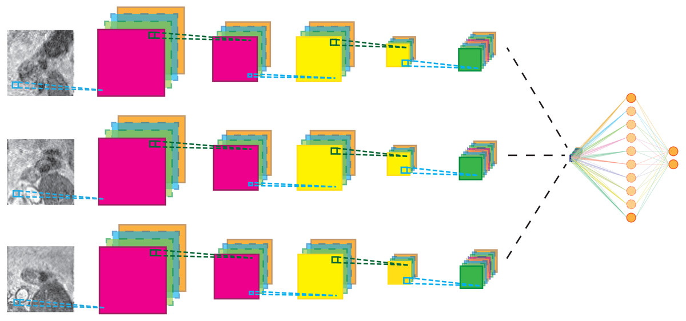

Convolutional Neural Networks. That's a mouthful to say isn't it?
People use them all the time, yet they are a total black box. Using
Tensorflow, Pytorch or another machine learning module to implement a
CNN is interesting, but learning the details can give deeper insights.
Simply put,
They are neural networks that take in 2 dimensional inputs, mainly
images. They have a variety of applications ranging from face
recognition in your smartphone to categorizing tumours as malignant or
benign. Recently, CNNs have even outperformed doctors in image
recognition.

It all starts at Image Processing
Images can be treated as two dimensional inputs. When we are dealing
with grayscale images at least. So, if we have a grayscale image, we can
directly convert it into a n x m matrix using the pixel
values(either 0 or 1) where n is the number of rows and m is the number
of columns. In other words, the image is ‘n’ high and ‘m’ wide. Image
processing is pretty cool.
Color
Hey wait..what about colored images? Well, this is where things get
messy. You have to have three “channels” as they call it. One for red,
one for green, and one for blue. If you’ve ever done CSS styling, when
you say ‘background-color: rgb(128,0,128)”, you are changing the
background color to purple using three values for red, green, and blue.
Same concept with images, except that you have multiple colors on the
same image so you have a matrix for each channel.
Convolution
Okay..how do we forward propagate these matrices? Let’s start with
grayscale images. Say we choose a 5 x 5 image. In order to forward
propagate this image, we first use a process called Convolution.
Convolving an image involves taking a filter, and running it across the
image. What does that mean? Try using the animation below by clicking
the "Convolve" button:
Image
1
0
1
1
1
1
1
0
1
0
1
1
0
0
0
0
1
0
0
1
1
1
0
0
1
Filter
1
1
1
0
0
0
1
1
1
If you didn’t catch what’s happening, its element wise multiplication!
For example, to get the first box of the result we take the sum:
So, every element in the filter multiplied by the corresponding element
in the image. You repeat this process with every shift of the filter and
you have what's called your "feature map". The general formula for
finding the dimensions of the feature map is:
m x m ** n x n ---> (m - n + 1) x (m - n + 1)
where 'm x m' are the image dimensions, 'n x n' are the filter
dimensions and ' ** ' represents the convolution operation.
Multiple Channels
When we have an RGB image, we have to use 3 filters, one for each
channel.
Image
Filter
Result
As you can see, the result of convolving a 3 x 3 x 3 filter on a 5 x 5 x
3 image, is still a 3 x 3 feature map. How? Well,
instead of shifting a square around the image like for grayscale images,
think about shifting a cubic filter across the 3-D matrix. Now, to get
the first square of the result, multiply every matching square and sum
them up. So, each square is the sum of 27 products.
Multiple Filters
First of all, why do we need multiple filters? Why can't we just use a
single filter? Well, in order to detect a variety of features and to
capture the "atmoic" elements of the image in the first layer, we need
to use multiple filters.
Image
Filter 1
Filter2
Result
So, each filter produces a single feature map. The yellow feature map is
the result of the first filter convolving, and the coral feature map is
the result of the second. Wait a minute...this is similar to how each
neuron in a neural net produces a single output. Coincidence? Turns out,
there are parallels between the architecture of CNNs and NNs. A filter
is analogous to a neuron so a layer of filters could be compared to a
layer of neurons.